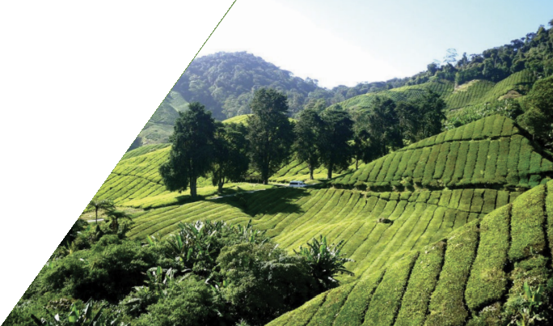

Health
Cardiac Center donation, ambulances and community clinics.
Community & CSR
Our companies support health, education, water, relief and sport in the areas where we operate.

Our community work
Community support spans essential services, skills and opportunity, with initiatives delivered by MIDROC companies in the places they serve.
Contact the group about community workCardiac Center donation, ambulances and community clinics.
Potable water supply for the Shakiso community, by MIDROC Gold.
New schools and learning materials for students near our operations.
Over 15 million birr of animal fodder for drought-affected Borena and East Guji (2022).
Construction of Woldia Stadium with local authorities.
Tea seedlings distributed to local farming communities.
Building sustainable value
For partnerships, investor and regulator enquiries, or information about any of our companies.
Contact us